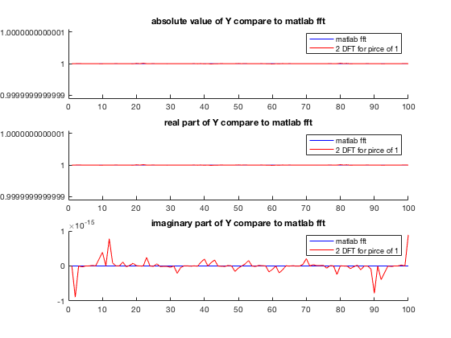
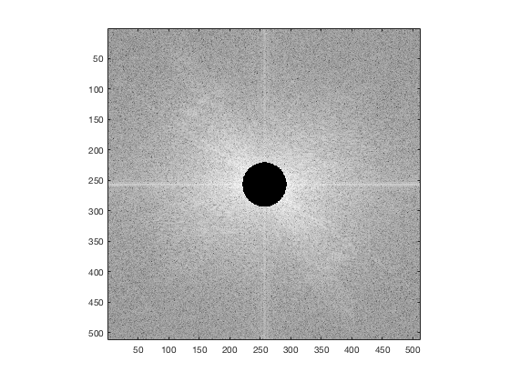

DFT of simple elementary signals
Contents
- 1.1
- 1.2
- 1.3
- 2.1
- 2.2
- 2.3
- 2.4
- Implementation tricks for the DFT
- 3 The Fast Fourier Transform
- the definition method
- the matrix method
- the DFT method
- 4 Two DFTs for the price of one
- 5 A faster DFT for a real sequence
- Applications of the DFT to images
- 1. Phase manipulation
- 2. Displace an image using the FFT
- my shift image program
- Use move_images func
- 3. Simple Fourier Filtering
1.1
close all; clear all; L = 100; % length of signal i.e. 100 samples Fs = 1000; % sampling frequency in Hz n = [0:L-1]; t = n/Fs; % time axis in seconds T = 0.11; % sine period x = sin(2*pi*t/T); % the first 100 samples figure(1) hold on; title(['the generated signal f=',num2str(1/T),'Hz']); xlabel('Time(s)'); ylabel('Signal'); plot(t,x); hold off; dft = fft(x); dft_dB = 20 * log10(abs(dft)); df = Fs/L; f = n*df; figure(2) hold on; title(['magnitude DFT of signal f=',num2str(1/T),'Hz']); xlabel('Frequency(Hz)'); ylabel('the magnitude of DFT(dB)'); stem(f(1:length(f)/2),dft_dB(1:length(dft_dB)/2),'.'); hold off;
1.2
close all; clear all; L = 100; % length of signal i.e. 100 samples Fs = 1000; % sampling frequency in Hz n = [0:L-1]; t = n/Fs; % time axis in seconds T = [0.11, 0.011, 0.005, 0.00125]; for i = 1:length(T) x = sin(2*pi*t/T(i)); figure(i) subplot(121) hold on; title(['the generated signal f=',num2str(1/T(i)),' Hz']); xlabel('Time(s)'); ylabel('Signal'); plot(t,x); hold off; dft = fft(x); dft_dB = 20 * log10(abs(dft)); df = Fs/L; f = n*df; subplot(122) hold on; title(['magnitude DFT of signal f=',num2str(1/T(i)),' Hz']); xlabel('Frequency(Hz)'); ylabel('the magnitude of DFT(dB)'); stem(f(1:length(f)/2),dft_dB(1:length(dft_dB)/2),'.'); hold off; end
1.3
close all; clear all; L = 100; % length of signal i.e. 100 samples Fs = 1000; % sampling frequency in Hz n = [0:L-1]; t = n/Fs; % time axis in seconds T = [0.11, 0.011, 0.005,0.00125]; N = [200, 1000]; for i = 1:length(T) x = sin(2*pi*t/T(i)); x_pad_200 = [x,zeros(1,N(1)-length(x))]; x_pad_1000 = [x,zeros(1,N(2)-length(x))]; %x_pad_200 = [zeros(1,N(1)-length(x)),x]; %x_pad_1000 = [zeros(1,N(2)-length(x)),x]; % with this code, we can see that it doesnt matter if we padding the % zeros before or after the signal. we can even put our signal between % the padding zeros. figure(i) subplot(211) hold on; title(['the generated signal T=',num2str(T(i))]); xlabel('Time(s)'); ylabel('Signal'); plot(t,x); hold off; %generate the ylable values which are the magnitude dft = fft(x); dft_dB = 20 * log10(abs(dft)); dft_pad_200 = fft(x_pad_200); dft_pad_200_dB = 20 * log10(abs(dft_pad_200)); dft_pad_1000 = fft(x_pad_1000); dft_pad_1000_dB = 20 * log10(abs(dft_pad_1000)); % generate the xlabel values df = Fs/L; f = n*df; n_pad_200 = [0:N(1)-1]; df_pad_200 = Fs/N(1); f_pad_200 = n_pad_200 * df_pad_200; n_pad_1000 = [0:N(2)-1]; df_pad_1000 = Fs/N(2); f_pad_1000 = n_pad_1000 * df_pad_1000; subplot(212) hold on; title('magnitude of DFT of signal'); xlabel('Frequency(Hz)'); ylabel('the magnitude of DFT(dB)'); stem(f(1:length(f)/2),dft_dB(1:length(dft_dB)/2),'.'); plot(f_pad_200(1:length(f_pad_200)/2),dft_pad_200_dB(1:length(dft_pad_200_dB)/2),'r'); plot(f_pad_1000(1:length(f_pad_1000)/2),dft_pad_1000_dB(1:length(dft_pad_1000_dB)/2),'g'); legend('x','x pad 200','x pad 1000') hold off; end
2.1
close all; clear all; n = [0, 1, 10, 50, 80]; for i = 1:length(n) x = xn(n(i)); t = 0:length(x)-1; xf = fft(x); figure(i); subplot(311); hold on; title(['impulse signal x[',num2str(n(i)),']']); xlabel('n'); ylabel('x[n]'); plot(t,x); hold off; subplot(312); hold on; title(['the DFT of impulse signal x[',num2str(n(i)),']']); xlabel('k'); ylabel('magnitude of X[k](linear scale)'); plot(abs(xf)); hold off; subplot(313); hold on; title(['the DFT of impulse signal x[',num2str(n(i)),']']); xlabel('k'); ylabel('phase of X[k]'); plot(unwrap(phase(xf))); hold off; end
2.2
close all; clear all; centre = 30; width = 60; x_tri = triangle(centre, width); xf_tri = fft(x_tri); xf_tri_mag = 20*log10(abs(xf_tri)); xf_tri_pha = phase(xf_tri); figure() subplot(311); hold on; title(['triangle signal center at ',num2str(centre),' width=',num2str(width)]); xlabel('sampled number'); ylabel('x[n]'); plot([0:99],x_tri); hold off; subplot(312); hold on; title(['DFT of triangle signal center at ',num2str(centre),' width=',num2str(width)]); xlabel('k'); ylabel('magnitude of X[k] (dB)'); stem([0:49],xf_tri_mag(1:50),'.'); hold off; subplot(313); hold on; xlabel('k'); ylabel('phase of X[k] (rad)'); plot([0:49],xf_tri_pha(1:50));
2.3
close all; clear all; x_tri = triangle(30, 60); xf_tri = fft(x_tri); n = [0, 1, 10, 50, 80]; for i = 1:length(n) x = xn((n(i)+1)); xf = fft(x); product = xf .* xf_tri; resulting_signal = ifft(product); figure(i); hold on; title(['convlution of impluse x[', num2str(n(i)), '] and triangle signals']); xlabel('n'); ylabel('resulting signal'); % plot([0:99],real(resulting_signal)); stem([0:99],real(resulting_signal),'.'); % due to matlab cannot start a serie from 0, % so we have a shift of % 2, because each % signal has a shift of % 1, and they did a % convlotion. end
2.4
Circular convolution
clear all; close all; x_tri = triangle(30, 60); xf_tri = fft(x_tri); product = xf_tri .* xf_tri; figure() hold on; title('inverse of the product of triangle signal DFT with itself'); xlabel('n'); ylabel('resulting signal'); plot(real(ifft(product))); hold off % due to the circular convolution, so we met the problem of 'overlay' that at the % beginning of the signal, it is the sum of the fisrt several values of the % signal with the last several values of the signal. % in order to avoid this problem, we could pad enough 0s in the original % signals to seperate it in the circular conlution. x_tri_pad = [x_tri,zeros(1,20)]; % here I pad 20 zeros, because the bandwidth of % the triangle is 60, and it is a 100 length signal, which means there are % alreay 40 zeros, so we just need to add 20 zeros. xf_tri_pad = fft(x_tri_pad); product_pad = xf_tri_pad .* xf_tri_pad; figure() hold on; title('inverse of the product of triangle signal padded DFT with itself'); xlabel('n'); ylabel('resulting signal'); plot(real(ifft(product_pad))); hold off; figure() hold on; title('convolution direct of triangle signal with itself'); xlabel('n'); ylabel('resulting signal'); plot(cconv(x_tri,x_tri)); hold off; figure() hold on; title('compare the three signal'); plot(cconv(x_tri,x_tri)); plot(real(ifft(product))); plot(real(ifft(product_pad))); legend('conv in time domain','circular conv without padding 0s','circular conv with padding 0s') hold off;
Implementation tricks for the DFT
3 The Fast Fourier Transform
the definition method
close all; clear all; x_tri = triangle(30,60); xf_tri = fft(x_tri); N = length(x_tri); XN = zeros(1,N/2); for k = 1:N DFTeven = 0; DFTodd = 0; for n2 = 1 : N/2 DFTeven =DFTeven + x_tri(2*n2-1) * exp(-j*2*pi*(k-1)*n2 ./(N/2)); DFTodd =DFTodd + x_tri(2*n2)* exp(-j*2*pi*(k-1)*n2 ./(N/2)); % in matlab, the array starts from 1, so the x[0] is the first % element in matlab, so here, even is 1 3 5.., and odd is 2 4 6.. end XN(k) = DFTeven + exp(-j*2*pi*(k-1)./N) .* DFTodd; % be careful here the k should also star from 0, end figure() hold on; title('Compare the absolute value of the FFT with matlab fft()'); plot([0:99],abs(xf_tri)); plot([0:99],abs(XN)); legend('using whole length DFT','using 2 half length DFTs'); hold off; x_rec = real(ifft(XN)); figure() hold on; title('Compare the reconstruction signal'); plot([0:99],real(ifft(xf_tri))); plot([0:97],x_rec(3:end)); %here we shift to right by 2 units, because of the matlab start from 1 and then we have a shift of 1 for each than it cumulate to 2 legend('the ifft of fft() matkab','ifft of 2 half length DFTs'); hold off;
the matrix method
close all; clear all; x_tri = triangle(30,60); xf_tri = fft(x_tri); N = length(x_tri); XN = zeros(1,N/2); x_even = x_tri(1:2:end); x_odd = x_tri(2:2:end); % create a matrix of n2 rows and k columns to represent the exp term in the % formula k = 0:N-1; % be careful here the k start from 0! n2 = 1:N/2; k_n2 = n2' * k; matrix = exp(-j*2*pi*k_n2/(N/2)); % here the matrix is exp term % do the DFT DFTeven = x_even * matrix; DFTodd = x_odd * matrix; XN = DFTeven + DFTodd .* exp(-j*2*pi*k/N); figure() hold on; title('Compare the absolute value of the FFT with matlab fft()'); plot([0:99],abs(xf_tri)); plot([0:99],abs(XN)); legend('using whole length DFT','using 2 half length DFTs'); hold off; x_rec = real(ifft(XN)); figure() hold on; title('Compare the reconstruction signal'); plot([0:99],real(ifft(xf_tri))); plot([0:97],x_rec(3:end)); legend('the ifft of fft() matkab','ifft of 2 half length DFTs'); hold off;
the DFT method
close all; clear all; x_tri = triangle(30,60); xf_tri = fft(x_tri); N = length(x_tri); XN = zeros(1,N/2); x_even = x_tri(1:2:end); x_odd = x_tri(2:2:end); xf_even = [fft(x_even),fft(x_even)]; xf_odd = [fft(x_odd),fft(x_odd)]; for k = 1: 100 XN(k) = xf_even(k) + exp(-j*2*pi*(k-1)./N) .* xf_odd(k); end % be careful here the k should start from 0! figure() hold on; title('Compare the absolute value of the FFT with matlab fft()'); plot([0:99],abs(xf_tri)); plot([0:99],abs(XN)); legend('using whole length DFT','using 2 half length DFTs'); hold off; figure() hold on; title('Compare the reconstruction signal'); plot([0:99],real(ifft(xf_tri))); plot([0:99],real(ifft(XN))); legend('the ifft of fft() matkab','ifft of 2 half length DFTs'); hold off;
4 Two DFTs for the price of one
close all; clear all; x = triangle(30,60); % create x(n) a triangle signal y = zeros(1,100); % create y(n) a impluse signal y(1) = 1; X_0 = fft(x); Y_0 = fft(y); [X_1,Y_1] = dualFFT(x,y); figure(1) subplot(311) hold on; title('absolute value of X compare to matlab fft'); plot(abs(X_0),'b'); plot(abs(X_1),'r'); legend('matlab fft','2 DFT for pirce of 1'); hold off; subplot(312) hold on; title('real part of X compare to matlab fft'); plot(real(X_0),'b'); plot(real(X_1),'r'); legend('matlab fft','2 DFT for pirce of 1'); hold off; subplot(313) hold on; title('imaginary part of X compare to matlab fft'); plot(imag(X_0),'b'); plot(imag(X_1),'r'); legend('matlab fft','2 DFT for pirce of 1'); hold off; figure(2) subplot(311) hold on; title('absolute value of Y compare to matlab fft'); plot(abs(Y_0),'b'); plot(abs(Y_1),'r'); legend('matlab fft','2 DFT for pirce of 1'); hold off subplot(312) hold on; title('real part of Y compare to matlab fft'); plot(real(Y_0),'b'); plot(real(Y_1),'r'); legend('matlab fft','2 DFT for pirce of 1'); hold off subplot(313) hold on; title('imaginary part of Y compare to matlab fft'); plot(imag(Y_0),'b'); plot(imag(Y_1),'r'); legend('matlab fft','2 DFT for pirce of 1'); hold off; %%%%% reconstruction of original signals x_0 = ifft(X_0); x_1 = ifft(X_1); figure(3); hold on; plot(real(x_0),'b'); plot(real(x_1),'r'); legend('origianl signal','price of 1'); hold off; y_0 = ifft(Y_0); y_1 = ifft(Y_1); figure(4); hold on; plot(real(y_0),'b'); plot(real(y_1),'r'); legend('origianl signal','price of 1'); hold off;
5 A faster DFT for a real sequence
close all; clear all; x = triangle(30,60); X_1 = realFFT(x); X_0 = fft(x); figure(1); hold on; plot(x) plot(real(ifft(X_1))); legend('original signal','fster DFT version'); hold off;
Applications of the DFT to images
1. Phase manipulation
clear all; close all; im_1 = imread('./images/lena.jpg'); figure(1) imshow(im_1); ima_out1 = phase_only(im_1); ima_out2 = phase_random(im_1); ima_out3 = amplitude_random(im_1); %%%% Comments: we can see that the phase is much important to define the %%%% contour of the image
2. Displace an image using the FFT
my shift image program
close all; clear all; im_1 = imread('./images/lena.jpg'); % do the fft and finde u v which is the number of rows and columns im_fft = fftn(double(im_1)); [u,v]=size(im_fft); N = max(u,v); % if the image is square, then N = u = v % x0 y0 are the value we want to shift x0 = 100; y0 = 250; % creat the matrix of extra phase vector_u = x0 * [1:u]'; vector_v = y0 * [1:v]; M = zeros(u,v); for m = 1:u for n = 1:v M(m,n) = vector_u(m) + vector_v(n); end end M_phase = exp(-j*2*pi*M ./N); new_fft = im_fft .* M_phase; im_shifted = abs(ifft2(new_fft)); figure(); imshow(uint8(im_shifted));
Use move_images func
close all; clear all; im_1 = imread('./images/lena.jpg'); figure(1) imshow(im_1); sx = 50; sy = 250; ima_out = move_image(im_1,sx,sy); figure(2) imshow(uint8(ima_out));
3. Simple Fourier Filtering
close all; clear all; im_1 = imread('./images/lena.jpg'); type = [0,1]; cutoff = 0.1:0.3:1; for i = 1:2 for j = 1:length(cutoff) ima_out = SimpleFiltering(im_1,type(i),cutoff(j)); end end